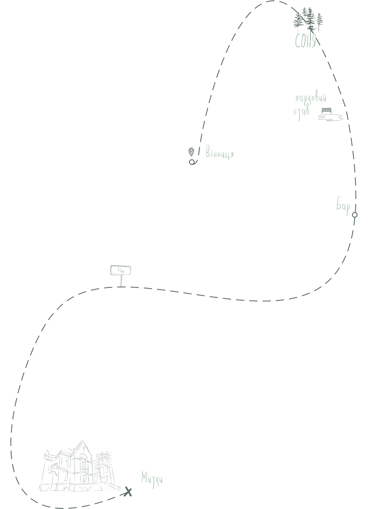

Подарунокдля доньки
Палац-садиба зведений на замовлення адмiрала росiйського флоту Миколи Чихачова, вiдомого дослiдника пiвночi для улюбленої доньки. Побудований iз жовтоi цегли на високому трав’янистому пагорбi з надзвичайно виразною пластикою фасадiв та цiкавим об’ємно-просторовим рiшенням. Навколо красивої споруди було насаджено парк у 10 га. Подейкують, що ялини були висадженi за формою iменi доньки – «Соня», але у садибi вона не жила жодного дня. Нинi у палацi розмiщена загальноосвiтня школа. А у просторому пiдвалi маєтку вмiстилась їдальня навчального закладу.